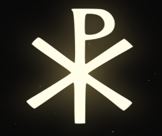

I’ve had a Chi-Rho (pronounced “kai-row”) symbol overlaying my custom Chrome tab+group+window manager CLI for a little more than 2 years now. Tonight being the evening preceding the Catholic feast of Trinity Sunday, I wanted to share a short piece on a personal interpretation of the symbol that links it to the Trinity.
An Ancient Contextual Exploration
For some background, the Chi-Rho is a monogram for “Christ” in Greek. A superposition of the first 2 letters of “Christos” in Greek (“ΧΡΙΣΤΟΣ”), “Chi” (P) and “Rho” (X), forms the symbol. It also holds another similar meaning shared with the Tau-Rho (TP), as a visual depiction of Christ hanging on the Cross. An image of the symbol is displayed below.

The Chi-Rho symbol displayed in my `AlxTab7` Chrome control interface.
This symbol was commonly used by early Christians to discreetly identify their belief in Jesus Christ during Roman persecution. It became most famously associated with Christianity in 312 A.D., when the Emperor Constantine the Great (born 272 A.D., ruling till death 306-377 A.D.) recordedly dreamt of receiving instructions to put a “heavenly divine symbol” on the shields of his soldiers.
4th-century historians recorded that earlier before that night, Constantine was mulling over how previous commanders had always faced disaster in their campaigns, despite their prayers to the many traditional Roman pagan gods. He then reflected on how his own father, Constantius Chloris, had rejected the pagan gods and had instead held a monotheistic belief, and how he had then led a peaceful and successful reign. After realizing this, Constantine and his entire army witnessed a glowing symbol shining in the daytime sky with the caption “In this, conquer!” That night, Constantine stated the Christian God, Jesus Christ, had appeared to him in his dreams and given him the orders to emblazon the Chi-Rho.
The next day, Constantine’s army fought the Battle of Milvian Bridge (312 A.D.) against an opposing emperor Maxentius, and claimed a decisive victory (Maxentius and the majority of his forces were wiped out). The battle marked the beginning of the close of the civil war and reuniting of the Roman Empire under one emperor. It is recorded that this battle marked the beginning of Constantine’s conversion to Christianity, and the furture legalization of Christianity in the Roman Empire.
The Chi-Rho had been commonly marked on Christian tombs and in discreet logications, but Constantine then made the Chi-Rho an imperial insignia. Discoveries from archeological sites confirmed the widespread usage on imperial coinage, helmets, and other medallions and military gear.
Through Christ and XP, to Find the Trinity
Traditionally, the Chi-Rho symbol is not seen as directly representing the 3-part Trinitarian God, but rather focusing on Christ specifically (per its spelling). However, I think that the Chi-Rho actually also points towards the Trinity, both indirectly and directly. After all, it is through Christ that the foundational belief of Christianity in a Trinitarian God was first established.
[“]16After Jesus was baptized, he came up from the water and behold, the heavens were opened [for him], and he saw the Spirit of God descending like a dove [and] coming upon him. 17 And a voice came from the heavens, saying, “This is my beloved Son, with whom I am well pleased.”[”]
Matthew 3:16-17, USCCB Books of the Bible
The figure of Christ in human form is how the Christian God chose to reveal Himself, and it points towards the ultimate purpose behind why He instituted the religion through His Church: to guide mankind to join into the love between the Father and the Son, manifested in the Holy Spirit. When one finds Christ the Son, one necessarily finds the Father and the Holy Spirit with Him (pointing at Christ is thus an “indirect” pointer towards the Trinity as a whole).
The Trinity is often confused by non-Christians as a belief in three Gods. However, Christianity clarifies that it is a monotheistic religion: God is one, but holds three persons. This belief is one of the prongs of Christianity that requires faith, but there are many illustrations which can help one towards a better understanding.
[“]Just as water, ice, and steam are all manifestations of the same substance; just as the length, breadth, and thickness of a cathedral do not make three cathedrals, but one; just as carbon, diamond, and graphite are manifestations of one and the same nature; just as the color, perfume, and form of a rose do not make three roses, but one; just as the soul, the intellect and the will do not make three lives but one; just as 1 x 1 x 1 = 1 and not 3, so in much more mysterious way there are three Persons in the Blessed Trinity and yet only one God.[”]
A beautiful excerpt from Archbishop Fulton Sheen on illustrations of the mystery of the Blessed Trinity.
I see the Chi-Rho symbol embodying another illustration of the Trinity. Visually, in the Chi-Rho, the “shaft” line of the “P” intersects the two lines of the “X” at the same junction. These three lines together make the six-pronged “hexagon base” (like a 6-point asterisk (“*”) symbol) of the Chi-Rho, with the little loop of the “P” on top.
The three lines intersecting are like the conjunction of the three persons of the Trinity; there are three lines yet one shape, and similarly three persons and one God. Each line is distinct (here by the slope of the line), yet each is also the same (here by the nature of being a line (and in the case of the Trinity, being a person in the Trinity), and yet together they are one (here by the connection of the Chi-Rho).
But further, the Chi-Rho adds its “head” to the illustration: the loop of the “P” represents the physical head of Christ, the human body of the Trinity - that which God sent to humanity to empathize with and physically draw close to. Note that without this “head” of the Chi-Rho, the three lines are by themselves an abstract asterisk; adding the loop makes the symbol immediately reminiscent of a figure hanging on a cross. Likewise, without Christ the religion of Christianity loses its uniqueness and meaning of focusing on the personal, human relationship with God.
And one more thing (warning: number play): both “Chi” and “Rho” have three letters in English, but are only one character in Greek i.e. “X” and “P” respectively, yet are the same. Sound familiar (3 persons same as 1 God)? When these two are combined together, they manifest another symbol. The Father’s and Son’s living bond is manifested in the Holy Spirit. Very fun stuff.
Thus, I like to see the glowing Chi-Rho on my Chrome New Tab page as a Trinitarian symbol as well. Happy soon-to-be Trinity Sunday!
More information and references linked at bottom: https://en.wikipedia.org/wiki/Chi_Rho